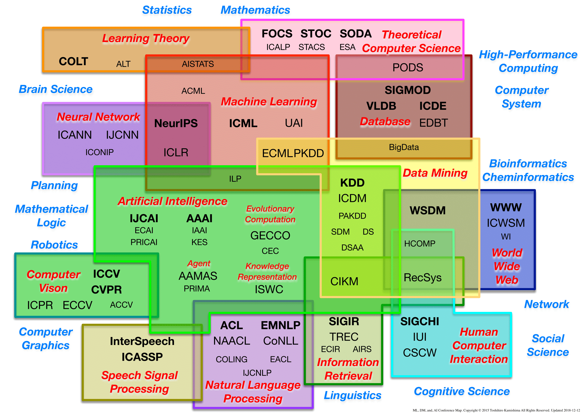

Guanqun Yang
Master Student in UCLA ECE Department
Publications
Preprints
Space Debris Terminator, a Comprehensive Approach
Guanqun Yang, Binzhe Li, Jiwei Liu, Mathematical Contest in Modeling, 2016
[Full Text]
Design and Implementation of Speaker Similarity Estimation System based on UCLA Variablity Database
Yucong Wang, Jingjing Zhang, Guanqun Yang, Zhengtao Zhou, ECE 214A Course Project, Winter 2018
[Full Text]
Fairness: What is the Right Thing to Do? A Comparative Study of Fairness-Preserving Algorithms
Guanqun Yang, CS 260 Course Project, Fall 2018
[Presentation Slide]-[Full Text]
Thesis
An Overview of Machine Learning Conferences
I originally wanted to put this article into my blog. However, I cound not find a good fit with my blog sections with the main aim of this article. Eventually, I decided to put this article here, hoping it could serve two purposes:
Reflection: re-evaluate my previous work in terms of their quality, novelty and popularity because of the correlation with the three factors of a paper and the prestige of a venue where it is actually shown to your colleagues.
Motivation: motivate me to work harder and publish more in those prestigious venues.
Computer Science Conferences Birdview
|
 |
The message from this image is quite clear without any further explanations. (credits to Prof. Toshihiro Kamishima, who is a pioneer in fairness-preserving machine learning.)
What is little surprising is that machine learning research shares such a large portion of all computer science conferences and it seems that machine learning has become a dominant field. This intution turns out to be a little biased and referring a more comprehensive ranking of computer science conferences (see here) might help.
|
Top-Tier Machine Learning Conferences
This is basically a more organized version of Prof. Yisong Yue's answer on Quora, together with some additional information taken elsewhere.
The characterization of a conference mainly focuses on three aspects, i.e. attendance, topics and prestige (what I call “ATP” for short). Therefore, a coarse rating of some well-known conferences look like the following
| Index | Conference | Attendance | Topics | Prestige | Note |
| 1 | NeuralPS | High | Wide | High | |
| 2 | ICML | High | Wide | High | |
| 3 | KDD | High | Wide | High | More focuses on new applications than basic methodology |
| 4 | AISTATS | Medium | Medium | High | Scale is limited because of smaller range of topics |
| 6 | UAI | Medium | Medium | High | Scale is limited because of smaller range of topics |
| 7 | COLT | Low | Narrow | High | Learning theory |
| 8 | ICLR | Low | Narrow | High | Deep learning |
| 9 | AAAI | High | Very Wide | Medium | |
| 10 | IJCAI | High | Very Wide | Medium |
|
|